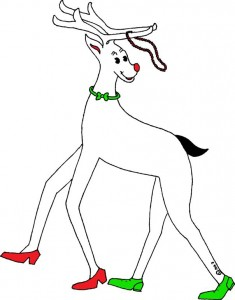

.
Suuri Gaala, juhlailta
.
Viihdykettä, musiikkia ja tanssia aamuun asti…
Scandic Rosendahl hotel
Pyynikintie 13, Tampere
Klo 07:30 – 04:00
70 Euroa
Lauantain aamu- ja iltapäivän voitte viettää haluamallanne tavalla, vaikka tehden ostoksia pitkien erikoisliikkeissä, vieraillen museoissa, kävellen Tammerkosken puisto- ja koskimaisemissa tai vain rentoutuen satamassa istuskellen. Alkuillasta haluatte ehkä jo valmistautua pitkien ihmisten ”Vuoden Iltaan”. . Loistava Gaalajuhlamme Scandic Rosendahl hotellissa alkaa klo 19:30. Te pitkät ystävät, jotka ette majoitu tässä hotellissa, voitte saapua bussilla tai taksilla. Kuten tiedättekin jo vuosien kokemuksella, tämä on se ilta, jolloin kaikki pitkät leidit ovat kauneimmillaan kantaen ylväänä upeinta ja uusinta iltapukuaan. Herrasmiehillä puolestaan on tilaisuus pukeutua smokkiin tai tyylikkäimpään pukuunsa solmiota unohtamatta. . Gaalailtaa vietämme hotellin juhlatiloissa, joista on loistava näköala järvelle ja Tampereen luontoon. Pöytävarauksia ei voi tehdä etukäteen, jokainen saa valita vapaasti istumapaikkansa. Tapaathan uuden ystävän pöydässäsi! Uusien ja vanhojen ystävien iloisen alkupuheensorinan jälkeen voimme nauttia 3 ruokalajin juhlaillallisesta klo 20:00 alkaen. Illallisen lomassa teille tarjoillaan mukavaa ja viihdyttävää ohjelmaa sekä joitakin yllätyksiä. . Musiikkia ja tanssia on tarjolla joka makuun nuorista vähemmän nuoriin. Me soitamme kaikkea mahdollista, valssista tangoon, diskoa ja teknoa – aamuun asti …